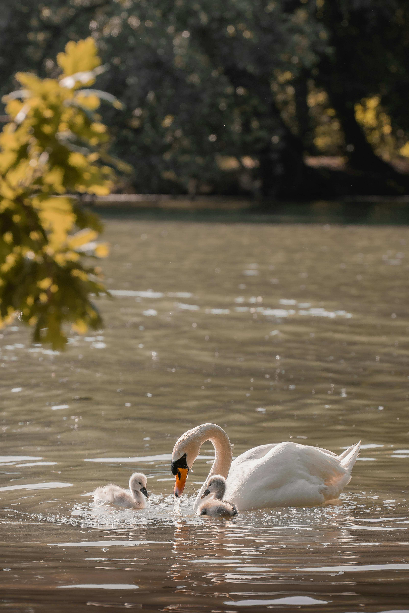

Taken on May 31st 2025 using the Sony ILCE-7RM3 camera. It's a JPEG image file type, as JPEG is popular for digital photography and online images becuase it's ideal for saving and sharing photographs.
I chose this image because I thought it looked nice, seems like the mother swan is playing with her children. Fun fact a young swan is called a cygnet.